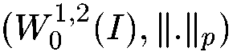
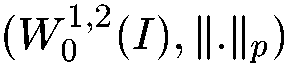
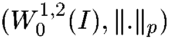

General information
Russian Systems and Control Archive (RUSYCON) provides possibility of
online express publishing of the research papers of limited size in the field
of
systems and control.
Both publishing and access to the published materials are free.
Authors may send their papers either directly or via members of the RNKAU
(Russian National Committee of Automatic Control).
In the latter case the published paper will be marked as:
"Recommended by the member of the Russian National Committee of Automatic
Control ".
Normally the paper will be posted within a week from the day of submission. The
confirmation of
publication will be sent to the authors as well as to the person who recommended
the paper not
later than on the day following the publication.
Information for authors
The file of the paper in .ps, .doc or .pdf
format (preferrably compressed)
should be e-mailed to info@rusycon.ru .
The size of the file should not exceed 600 Kbytes which corresponds to 5-6
normal
pages with 1-2 small figures. The layout of the paper should be in the
IFAC-Automatica
style: the title should be followed by authors full names, affiliations,
adresses (including
FAX and e-mail address) and 4 keywords to indicate the area of the paper.
An abstract in the plain text format (up to 2 Kbytes, with possible use of LaTeX
symbols)
should be sent separately. If Russian version of abstract is not provided by the
authors
it will be created by the editors. However it is preferrable that authors send
their abstracts
in both languages.
How to refer to a paper from RUSYCON
Example:
Ivanov I.I. Philosophy of science. Electronic Journal RUSYCON,
25.08.2001 (www.rusycon.ru/journal)
February 10, 2010
Furtat I. B.(Astrakhan State Technical University, Russia)
Decentralized time-suboptimal control of multiinput-multioutput systems
In paper is considered decentralization robust optimal control of parametric and functionally by uncertain multicoherent plant. It is supposed that the scalar outputs of local subsystems are accessible measurement only each of which are used only in the subsystems. The purpose of control consists in translation of plant of an initial condition to final for the minimal time with the given accuracy.
M.S. Ananyevskiy(Saint Petersburg State University, Russia)
Speed-gradient control for quantum-mechanical model of diatomic molecule
The observables control problem for finite dimensional
quantum diatomic molecule is examined. Applying Speed-Gradient
algorithm to quantum model a new control algorithm is designed. It
is proved that the control goal is achieved for initial conditions
from a pretty large domain of phase space. It is shown that the
control function can be arbitrary small. The results are
illustrated by the numerical example for HF molecule.
E. Schoell, A. Amann, J. Schlesner, J. Unkelbach(Institut fuer Theoretische Physik, TU-Berlin, Germany),
W. Just(Theoretische Physik I, TU-Chemnitz, Germany)
Chaos control of nonlinear current oscillations in semiconductor heterostructures
We study autosynchronization by time delayed feedback control of chaotic spatio-temporal patterns in
spatially extended semiconductor models. Different control schemes, e.g., a diagonal control matrix, or global control, or
combinations of both, are compared. In particular, we use two models of semiconductor
nanostructures which are of current interest: (i) superlattice, (ii) double-barrier resonant-tunneling diode.
A. Amann, E. Schoell(Institut fuer Theoretische Physik, TU-Berlin, Germany),
N. Baba(Max-Planck-Institut fuer Physik Komplexer Systeme, Germany),
W. Just(Theoretische Physik I, TU-Chemnitz, Germany)
Time delayed feedback control of chaos by spatio-temporal filtering
Time delayed feedback control is employed to stabilise time periodic patterns in a reaction-diffusion model with global
coupling. The control performance is increased by several orders of magnitude by suitable filters and couplings which are
based on the Floquet eigenmodes of the unstable orbit. The essential mechanism for the
improvement of the control performance is attributed to a phase synchronisation mechanism between the target state and the
control loop.
Sufficient conditions for elliptic problem of optimal control in the Sobolev space W01,2(I), where I is a bounded interval in R
The paper is concerned with the local minimization problem far a variety of
non Frechet-differentiable Gateau functional
in the Sobolev space ,
where u is the solution of the Dirichlet
problem for a linear uniformly elliptic operator with nonhomogenious term
f and
is the norm generated by metric space .
We use a recent extension of Frechet-Differentiability (approach of Taylor mappings see [1]),
and we give various assumptions on v to guarantee
a critical point is a strict local minimum.
Finally, we give an example of a control problem, where classical Frechet
differentiability can't be used and their approach of Taylor mappings works.
Robust Control Algorithm of Uncertain Object without Measurement of Derivatives of an Adjustable Variable
Robust control scheme of uncertain object without measurement of derivatives of an adjustable variable (an output of
object of control), providing under the assumptions to the object of control given in the paper, limitation of an adjustable
variable and its convergence to some limited invariant set is offered. Procedure of synthesis is based on popular Morse
approach, which in the literature has received the name of "adaptation algorithm of the high order". In contrast to
adaptation algorithm of the high order, the offered scheme of robust control allows to synthesize regulators less bulky in
dimension. In the paper the results of computer modelling, which illustrate the efficiency of the offered control scheme are
given.
There is a thesis about universality of mechanisms of the chaos and
regulating state which distributes on all world's appearances and studies
in that work. The differences between steady and aperiodic state of
system is determined by a scale and axises of coordinates. It proposes,
that the state of equilibrium and non-stable behavior of the system is
a phase of some process and depends on level of provideness of resourses
the elements of this system. The conception about phenomenon of chaos
be used in applied purposes. For example - in forecasting of probable
seat or moments of crisis.
E.V. Nikulchev(Moscow State Academy of Instrumentation and Computer Science)
Application of the Methods of Differential Geometry to Control of Complex Systems
In the paper the mathematical methods and models for control of nonlinear dynamical plants performance under functional constraints are considered. The mathematical tools based on finite groups and Lie algebras theory are developed.
A.L. Fradkov(Institute for Problems of Mechanical Engineering, St. Petersburg, Russia)
Chaos Control Bibliography (1997 - 2000)
This bibliography contains about 700 references to the papers published in
peer reviewed journals in 1997-2000, as well as the list of related books,
surveys, special issues of journals and conference proceedings published
since 1994. It was prepared using Science Citation Index
(www.webofscience.com) when the author was staying in the University of Melbourne
in Oct-Dec, 2000. Papers are classified by problems and methods of their solutions,
as well as by application fields.
Three theorems related to the Brockett stabilization problem
(R.Brockett. A stabilization problem. In: Open Problems in
Mathematical Systems and Control Theory. Springer-Verlag, 1999.)
for 2-dimensional, 3-dimensional and n-dimensional linear systems are given.
The Lyapunov Functions in Estimates of a Dimension
of Dynamical System Attractors
The present work was reported in the Rokhlin memorial conference in August
1999. It incorporates a review of the results, concerning estimations of
attractor dimensions by the Lyapunov functions.
This line of investigation made possible to obtain the highly simple formulas
for computing the Lyapunov dimension of the Henon and Lorenz attractors
A.L. Fradkov(Inst. for Problems of Mechanical Engineering),
V.O. Nikiforov(St. Petersburg State Inst. of Fine Mechanics and Optics)
Internet-Technologies of Scientific Research (in Russian)
The paper is an extended version of the lecture delivered by the authors at the
2nd St.Petersburg Conference of Young Scientists "Navigation and Motion
Control" in March, 2000. A number of hints for using Internet in the scientific
research in the
field of systems and control are given. It may be also used as a beginner's
guide for
RUSYCON - Russian Systems and Control Archive.
Papers of the winners of VIII International Student Olympiad on Automatic Control
(BOAC 2000).
I.E. Vasilyeva( Voronezh State University)
An Application of Quasi-Flows for modeling of Non-Smooth Processes
The method of constructing of an approximate solution to differential inclusions with maximal monotone operators is considered based on theorems on convergence of quasi-flows.
D.V. Gromov(Belarusian State University of Informatics and Radioelectronics, Minsk, Belarus)
Nonlinear Sliding Mode Control with Bounded Input Planar Case
An examination is made of the problem of the control of 2nd order nonlinear time-invariant dynamical systems with bounded controllers using the sliding mode control approach. A novel type of non-smooth Lyapunov functions is introduced. The approaches to estimation of a region of attraction for this class of system are given.
Vytautas Barzdaitis(Vytautas Magnus University, Kaunas, Lithuania)
Modeling Fuzzy Inference System with Noisy Data
Model based on Fuzzy Inference System is proposed. With the help of the model noise correction is done in artificial and experimental data sets. Finally, after the correction of the noise is done, the function represented the dependence between the inputs and the outputs of the noisy data set are extracted.
B.A. Krassi(Helsinki University of Technology, Finland)
The Large Range Capacitive Sensor for Human Motion Recognition
The large range system for human motion recognition based on capacitive sensor was developed. The distinguishing features are the range of the size of the room with the resolution up to centimeters, high immunity to noise, software implementation of the signal processing, recognition by analyzing integral space distribution of the capacity. The working setup is to be involved to Expo 2000, Hanover for virtual reality scenes control
M. Azarov(St. Petersburg State Univ. of Aerospace Instrumentation)
Synthesis of the Structure of Light Unmanned Aerial
Vehicle Dynamic Model Parameter Identification System
The problem of synthesis of aircraft model parameter identification system is discussed. An approach is based on the use of structure of discrete-time system with tuning model.
 in the Sobolev space ,
where u is the solution of the Dirichlet
problem for a linear uniformly elliptic operator with nonhomogenious term
f and
in the Sobolev space ,
where u is the solution of the Dirichlet
problem for a linear uniformly elliptic operator with nonhomogenious term
f and